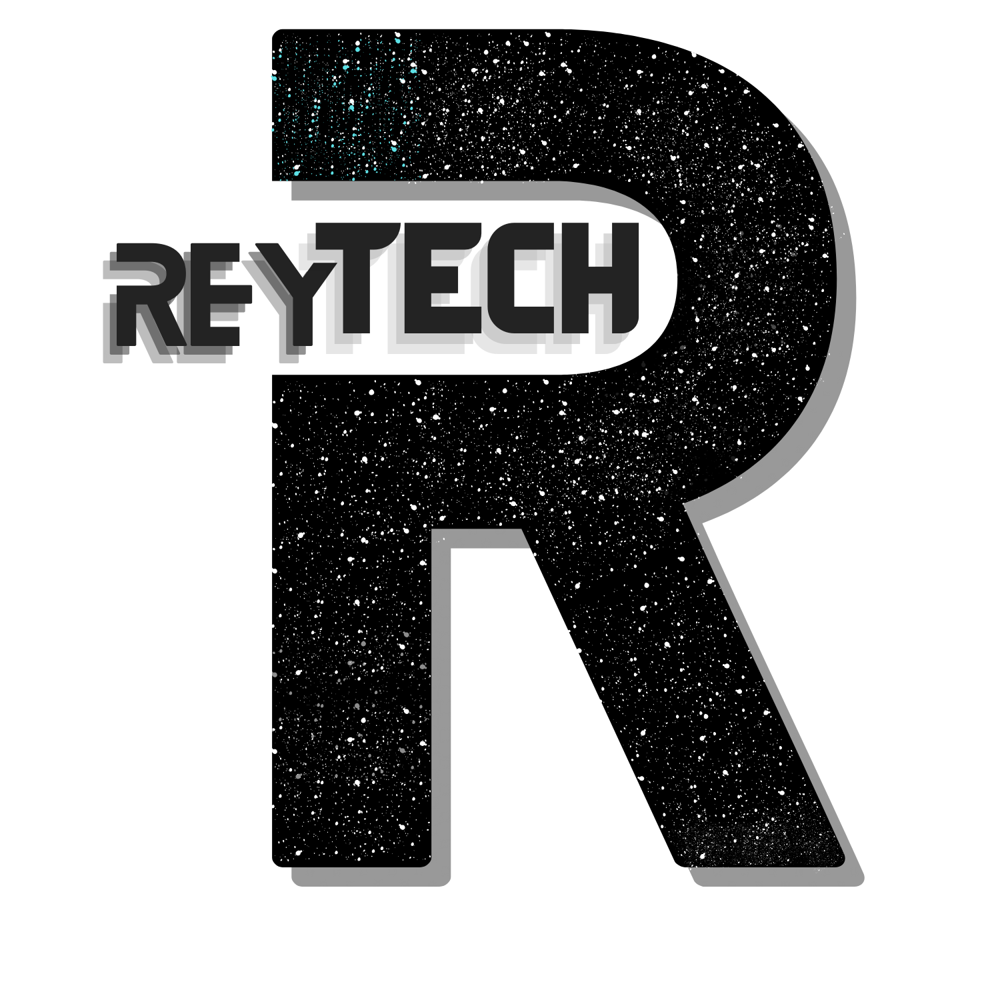
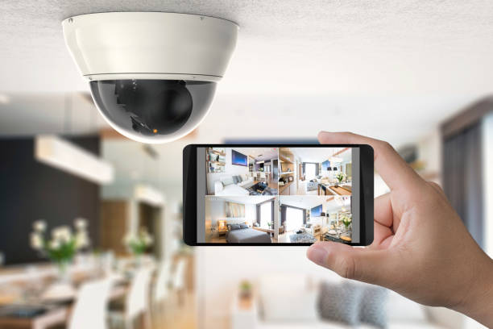
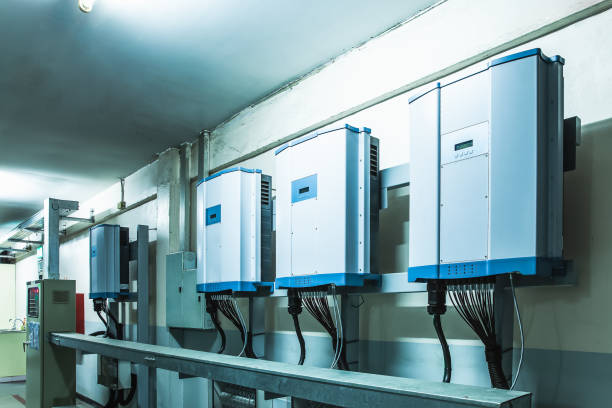
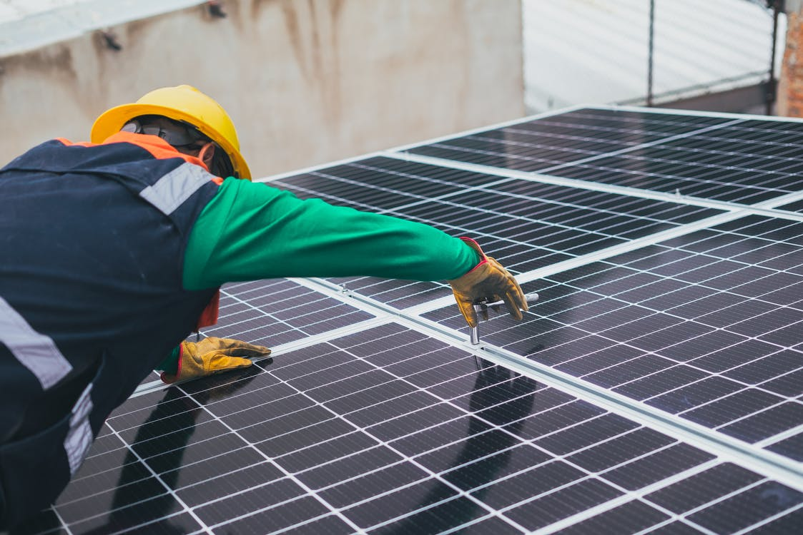
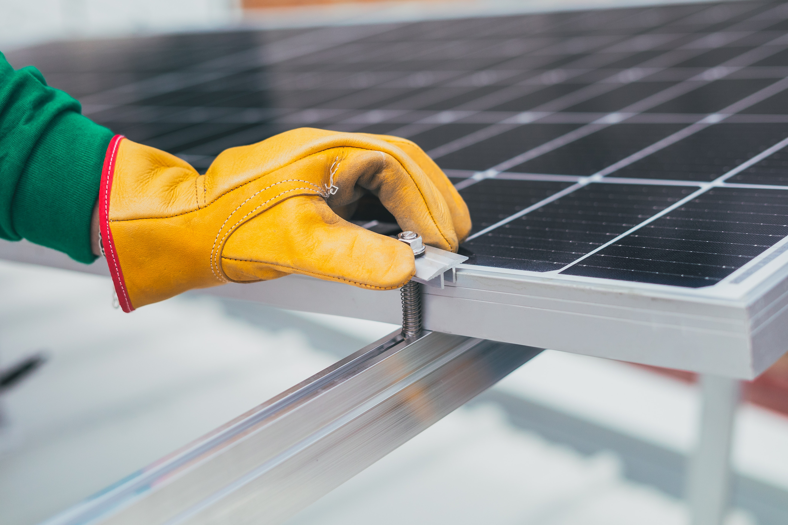
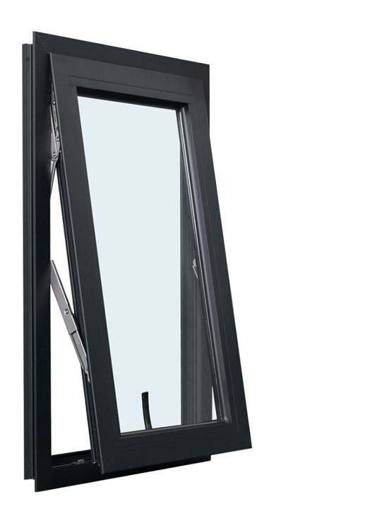

Overview
Purpose
Have you ever thought of generating your own electrical energy and stop paying bills?
Do you require high-speed internet or a tech specialist to set up your office technology or monitor the situations
at home or office from your convenience?
ReyTechCo is a reliable tech firm that provides you with these services at affordable prices.
We also offer Fabrication, Installation and Sales of Aluminium Doors, Windows and Blinds.
We are poised to offer you top-notch integrated services that suit your finance for both residential and
commercial needs.
Audience
Schools, Companies, Churches, Homes, Institutions
Branding
Website Logo

Style Guide
Color Palette
Palette URL: https://coolors.co/381D2A-E7C24F-E8F1F2-AABD8C-E8F1F2| Primary | Secondary | Accent 1 | Accent 2 |
|---|---|---|---|
| [#381D2A] | [#13293D] | [#A43312] | [#AABD8C] |
Typography
Heading Font: Garamond, serif;
Paragraph Font: 'PT Serif', 'Times New Roman', serif;
Our Services:
Solar Systems, CCTV, Electric Fence Installation & Aluminium Doors and Windows Fabrication
Solar energy is a vital supply of renewable energy that is more affordable now than ever before, obtained through beaming light-weight and warmth from the sun that is controlled by employing various technologies similar to alternative technology to produce electricity for a wide variety of residential and commercial uses. Using solar power to generate electricity at home is a completely attractive choice for some reasons not only would you be decreasing your general environmental footprint and greenhouse gas emissions, you would have reduced bills and will generate some profits with the aid of selling back excess energy into the grid in some countries were its allowed.
Solar Inverter or PV Inverter is one of the most critical components of the solar power system and is often referred to as the heart of a solar PV system. It converts DC (like 12V/ 24V/ 48V) electricity from solar panel into AC (like 120V/ 230V/ 240V) power required to run your applicance. ReyTechCo provides a complete range of Solar Inverters, Durable Battries (Sealed or Tubular), off grid inverter, micro inverter, solar pump inverter and other devices for your solar system to generate the needed electricity in your home or offices at a fair price.
Closed Circuit Television CCTV and Eletric Fence
CCTV, or closed-circuit television, is a system that allows you to keep an eye on what’s going on in and around your business. Cameras and monitors enable you to view events live, and recorders archive footage for later reference. In order to properly protect your building and serve its full functions, your CCTV system has to be in working order at all times.
Whether you need basic wired analog cameras, or you want the latest wireless IP cameras with every advanced feature available, we can address your needs. ReyTechCo can expertly install a CCTV system in your home or business area, whether your goal is to deter break-ins and theft, or monitor the happenings in your home, prevent vandalism, monitor traffic, or keep an eye on employees, CCTV could provide a significant benefit for your business. We can also help you overcome problems with burglary and tresspassing by providing you with Electric Fencing around your property.
Aluminium Doors and Windows
Here at ReyTechCo we are also specialists in the supply, installation and ongoing maintenance of windows and doors that would give your home or office the serene look.
Navigation
Site Map
Solar-Systems, CCTV & Electric-Fence
Home page
Welcome to ReyTechCo, we install high quality power Solar-Systems, Closed Circuit Television (CCTV) and Electric-Fence with Aluminium Windows and Doors for your homes and organisation nationwide.
Images for the Home page


Solar-Systems, CCTV & Electric-Fence
Here at Reytech, our organisation offers extremely capable power generation inverter system that can be used to run lights, fans, ACs, and even heavy machinery across locations such as your home, shops, commercial spaces and industrial spaces. These are smartly designed, cost-effective & environment-friendly. We are passionate about keeping your business or home secure, which is why our qualified team of specialists are readily available to provide you with security systems at your premises that act as a serious deterrent to criminals and anyone carrying out illegal activities.
Images for the Page 2


Aluminium Doors and Windows
Aluminium windows and doors are a quiet preferable option for most house owners and architecture. It tends to be more and more welcoming for both residential or commercial needs. At ReyTechCo our products are CUSTOMER MADE. We always manufacture windows and doors according to the buyer's dimensions.
Images for the Page 3


Wireframes
Create three wireframes for your site. One for each page and list them here
Home
[Any additional details about home that the wireframe does not make clear]
[Page 2]
[Any additional details about page 2 that the wireframe does not make clear]
About-Us
[Any additional details about page 3 that the wireframe does not make clear]